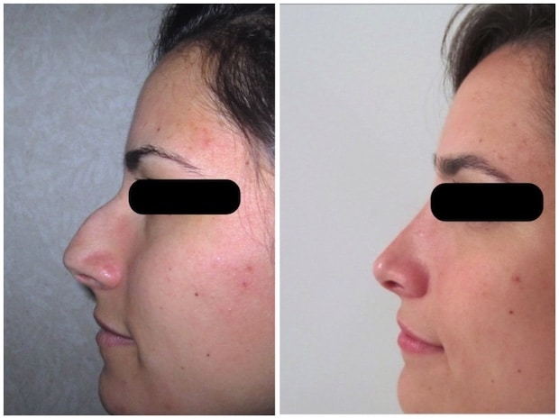
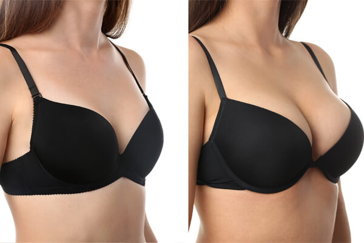

Voici quelques résultats de chirurgie Avant/Après opération.
Ici, Emilie a voulu effectuer une rhinoplastie à cause d'un surplus cartilagieux au milieu du nez.
L'opération a duré 2h. Elle a obtenue le résultats ci dessous après 3 mois de soin minutieux post opération.
Voici son témoignage : "L'intervention s'est vraiment très bien déroulée, même si je me suis réveillée très nauséeuse. À aucun moment, je n'ai ressenti de douleurs. Pas même lors du retrait des mèches le lendemain, alors que tout le monde m'avait prévenue que ça pouvait être pénible. J'ai juste été surprise par l'incroyable quantité de tissu que le chirurgien avait extirpé de mon nez. Ça n'en finissait plus ! Pour me faire patienter avant le retrait du plâtre, le médecin avait pris des photos de mon nez refait au bloc pour me montrer à quoi il ressemblerait en fin de course. Je l'avais trouvé top."
Ici, Tanguy a du effectuer chirurgie maxillofaciale à cause d'une machoire trop avancée.
Voici son témoignage : Suite à des problèmes respiratoires, j'ai du me faire opérer d'une ostéotomie maxilo - faciale et genioplastie par la suite. J'ai été opéré par le docteur Honnête. Les deux chirurgies se sont bien déroulés dans l'ensemble . Pour la première, ça a été très compliqué, il a fallu beaucoup de temps de réadaptation, une nourriture très liquide pendant quelques semaines, ce qui a eu pour effet de me faire perdre 7 kg. Pour la seconde chirurgie, la genioplastie cela s'est mieux déroulé. C'etait une chirurgie moins lourde que la première. J'ai du me faire reculer l'os du menton de quelques centimètres pour ensuite être tenu par un vis. Ces opérations m'ont changé la vie tant au niveau physique que émotionnel. Si vous devez subir une de ces opérations, foncer, le jeu en vaut la chandelle , même si ça peux paraître effrayant il vaut mieux se lancer. Le résultat sera au rdv.
Brenda 25 ans, énormement complexée par sa poitrine a décidé de passé le cap en souhaitant faire une augmentation mammaire.
L'opération a duré 2h. Elle a obtenue le résultats ci dessous après 3 mois de soin minutieux post opération.
Voici son témoignage : "Complexée par ma poitrine, trop petite à mon goût, je ne me sentais pas bien dans mon corps. C'est pourquoi j'ai fait appel au Dr Aknin pour une chirurgie d'augmentation mammaire. Ce n'était pas ma première opération de chirurgie esthétique, j'avais déjà été opérée du nez par le passé. Cependant, j'appréhendais tout de même l'intervention, pour l'aspect des cicatrices post-opératoires, j'avais aussi peur de perdre l'harmonie naturelle de ma poitrine. Le Dr Aknin a su me rassurer en répondant à toutes mes questions et inquiétudes. Tout au long de mon parcours, le secrétariat a été aux petits soins avec moi, le Docteur rassurant et sympathique également. Aujourd'hui, je me sens très bien dans ma peau avec cette nouvelle poitrine. J'ai regagné confiance en moi, j'ai plus d'assurance. En résumé, je suis plus heureuse dans ma vie. Je recommande le cabinet du Dr Joël Aknin : compétent, sérieux, professionnel et rassurant.""